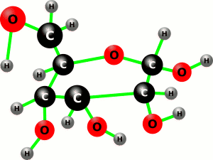

BIC 101 :: Lecture 01 :: INTRODUCTION, CARBOHYDRATES – IMPORTANCE & CLASSIFICATION

Biochemistry, as the name implies, is the chemistry of living organisms. Living organisms, whether they are microorganisms, plants or animals are basically made up of the same chemical components. Biochemistry is the study of the way in which these components are synthesized and utilized by the organisms in their life processes. It bridges the gap between the conventional chemistry and biology.
In other words, life is nothing but thousands of ordered chemical reactions or chemistry is the logic of all biological phenomena.
History of biochemistry
During 17th and 18th centuries, important foundations were laid in many fields of biology.
- The 19th century observed the development of concepts - the cell theory by Schleiden and Schwann, Mendel’s study of inheritance and Darwin’s theory of evolution.
- The real push to biochemistry was given in 1828 when total synthesis of urea from lead cyanate and ammonia was achieved by Wohler who thus initiated the synthesis of organic compound from inorganic compound.
- Louis Pasteur, during 1857, did a great deal of work on fermentations and pointed out the central importance of enzymes in this process.
- The breakthrough in enzyme research and hence, biochemistry was made in 1897 by Edward Buchner when he extracted enzyme from yeast cells in crude form which could ferment a sugar molecule into alcohol.
- Neuberg introduced the term biochemistry in 1903.
The early part of 20th century witnessed a sudden outburst of knowledge in chemical analysis, separation methods, electronic instrumentation for biological studies (X-ray diffraction, electron microscope, etc) which ultimately resulted in understanding the structure and function of several key molecules involved in life processes such as proteins, enzymes, DNA and RNA.
- In 1926, James Sumner established the protein nature of enzyme. He was responsible for the isolation and crystallization of urease, which provided a breakthrough in studying of the properties of specific enzymes.
- The first metabolic pathway elucidated was the glycolytic pathway during the first half of the 20th century by Embden and Meyerhof. Otto Warburg, Cori and Parnas also made very important contributions relating to glycolytic pathway.
- Krebs established the citric acid and urea cycles during 1930-40.
- In 1940, Lipmann described the central role of ATP in biological systems.
- The biochemistry of nucleic acids entered into a phase of exponential growth after the establishment of the structure of DNA in 1953 by Watson and Crick followed by the discovery of DNA polymerase by Kornberg in 1956.
From 1960 onwards, biochemistry plunged into an interdisciplinary phase sharing much in common with biology and molecular genetics.
- Frederick Sanger’s contributions in the sequencing of protein in 1953 and nucleic acid in 1977 were responsible for further developments in the field of protein and nucleic acid research.
The growth of biochemistry and molecular biology was phenomenal during the past two decades.
- The development of recombinant DNA research by Snell and coworkers during 1980 allowed for further growth and emergence of a new field, the genetic engineering.
Thus there was progressive evolution of biology to biochemistry and then to molecular biology, genetic engineering and biotechnology.
CARBOHYDRATES

Compounds with empirical formula, (CH2O)n, were called as carbohydrates (hydrates of carbons). With the discoveries of many diverse carbohydrates it was noticed that many, but not all, carbohydrates have the above empirical formula; some also contain nitrogen, phosphorus or sulfur. There are some carbohydrates (derivatives) that do not possess (CH2O)n. On the other hand, there are a few non-carbohydrate compounds like lactic acid with empirical formula (CH2O)n. Hence, carbohydrates are chemically defined as polyhydroxy aldehydes or ketones, their derivatives and their polymers.
Occurrence and importance
- The carbohydrates comprise one of the major groups of naturally occurring biomolecules. This is mainly because; the light energy from the sun is converted into chemical energy by plants through primary production and is transferred to sugars and carbohydrate derivatives.
- The dry substance of plants is composed of 50-80% of carbohydrates. The structural material in plants is mainly cellulose and related hemicelluloses.
- Starch is the important form of storage polysaccharide in plants.
- Pectins and sugars such as sucrose and glucose are also plant constituents.
- Many non-carbohydrate organic molecules are found conjugated with sugars in the form of glycosides.
- The carbohydrates in animals are mostly found in combination with proteins as glycoproteins, as well as other compounds.
- The storage form of carbohydrates, glycogen, found in liver and muscles, the blood group substances, mucins, ground substance between cells in the form of mucopolysaccharides are few examples of carbohydrates playing important roles in animals.
- Chitin found in the exo-skeleton of lower animals, is a polymer of N-acetyl glucosamine.
Carbohydrates are also universally found in other polymeric substances. For example,
- Fats are fatty acid esters of a sugar alcohol, glycerol.
- Ribose and deoxyribose are constituent of nucleic acids.
Moreover, in all living forms, the energy needed for mechanical work and chemical
reactions are derived from carbohydrates.
- Adenosine triphosphate and related substances that contain ribose as a constituent are key substances in energy storage and transfer.
- The carbon skeletons of almost all organic molecules are derived from carbohydrates.
Besides, the carbohydrates are the basic raw material of many important industries including sugar and sugar products, starch products, paper and wood pulp, textiles, plastics, food processing and fermentation.
CLASSIFICATION
Carbohydrates are classified into three major groups:
- Monosaccharides
- Oligosaccharides
- Polysaccharides
Classification of carbohydrates
Monosaccharides (Simple sugars) |
Oligosaccharides |
Polysaccharides (Glycans) |
Low molecular weight carbohydrates and |
Contain 2-10 monosaccharides joined by glycosidic bonds. Low molecular weight carbohydrates which can be hydrolysed by enzymes or acids to yield monosaccharides |
Contain many monosaccharides joined by glycosidic bonds. They can be hydrolysed by enzymes or acids. |
Crystalline, soluble in water, and sweet in taste. |
Powdery or crystalline, soluble in water |
Insoluble in water, tasteless, linear or branched |
Classified into triose, tetrose, pentose, hexose and heptose depending upon the number of carbon atoms. They may be either aldoses or ketoses depending upon whether they contain a free aldehyde or ketone group, respectively |
Classified into disaccharide, trisaccharide, tetrasaccharide and pentasaccharide depending upon the number of monosaccharides they contain. |
Classified into homoglycans and heteroglycans depending upon the kind of monosaccharides present. Depending upon the function, they are classified as storage and structural polysaccharides. |
All monosaccharides are reducing in nature |
Some of them are reducing and some of them are non reducing in nature. |
Non reducing in nature and give deep blue (amylose) or red colour (amylopectin) with iodine. |
Monosaccharides:
Monosaccharides are the simplest form that cannot be hydrolyzed further into smaller units. They are classified into a) simple monosaccharides b) derived monosaccharides
Simple monosaccharides are further classified
- based on the type of functional group and
- the number of carbon atoms they possess.
Derived monosaccharides include the derivatives of simple monosaccharides such as oxidation products, reduction products, substitution products and esters
Classification of monosaccharides
Monosacchar ides |
No. of |
Aldose |
Ketose |
Occurrence |
Simple |
|
|
|
|
Triose |
3 |
D-Glycerose |
Dihydroxy |
Intermediary meta- bolites in glucose metabolism |
Tetrose |
4 |
D-Erythrose |
D-Erythrulose |
|
Pentose |
5 |
D-Ribose |
D-Ribulose |
Ribose is a constituent of nucleic acid |
|
|
L-Arabinose |
- |
Occurs in oligosac charides |
|
|
D-Xylose |
D-Xylulose |
Gum arabic, cherry |
Hexose |
6 |
D-Glucose |
D-Fructose |
Fruit juices and cane sugar |
|
|
D-Galactose |
- |
Lactose, constituent of lipids |
|
|
D-Mannose |
- |
Plant mannosans and glycoproteins |
Heptose |
7 |
- |
D-Sedoheptulose |
Intermediate in carbohydrate metabolism |
Derived |
||||
Deoxysugar |
5 |
2-Deoxyribose |
- |
DNA |
|
6 |
L-Rhamnose |
- |
Component of cell wall |
Aminosugar |
6 |
D-Glucosamine |
- |
A major component of polysaccharide found in insects and crustaceans (chitin) |
Polyol |
6 |
Sorbitol |
- |
Berries |
|
6 |
Mannitol |
- |
Commercially prepared from mannose and fructose |
Aldonic acid |
6 |
Gluconic acid |
- |
- |
Uronic acid |
6 |
Glucuronic acid |
- |
Constituent of chondroitin sulfate |
|
6 |
Galacturonic acid |
- |
Constituent of pectin |
Aldaric acid (Saccharic acid) |
6 |
Glucaric acid |
- |
Oxidation product of glucose |
|
6 |
Mucic acid |
- |
Oxidation product of galactose |
Oligosaccharides:
They contain two to ten monosaccharide units joined by glycosidic linkages that can be easily hydrolyzed.
Polysaccharides:
They are high molecular weight polymers containing more than ten monosaccharides. They are either linear or branched in structure.
Polysaccharides are further classified based on
a) the kind of monosaccharides present as:
- Homopolysaccharides when made from a single kind of monosaccharide. Eg starch, cellulose, inulin, glycogen, chitin
- Heteropolysaccharides are made up of more than one type of monosaccharides. Eg. Hemicellulose, Mucopolysaccharides – Chondroitin sulphate, Hyaluronic acid Heparin and Keratan sulphate
b) functional aspect as:
- Storage Polysaccharide eg. Starch, glycogen, inulin, Galactomannan
- Structural Polysaccharide eg.Cellulose, Chitin, Hemicellulose
| Download this lecture as PDF here |